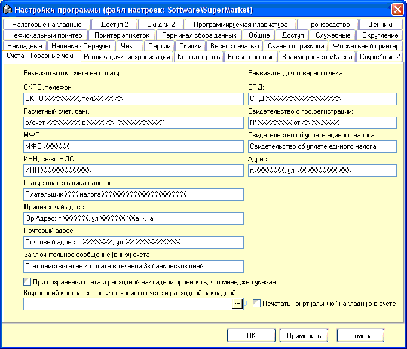

В основном эта вкладка
опций служит для хранения реквизитов, которые заполняются в шапки документов.
Смысл остальных опций ясен из их названия.
Разъясним только опцию Печатать "виртуальную
накладную в счете" - некоторые организации, когда берут счет на оплату сразу
требуют и накладную, она при этом печатается, но не сохраняется, ее фактически
делают позже, на основании счета, когда поступят деньги на расчетный
счет.